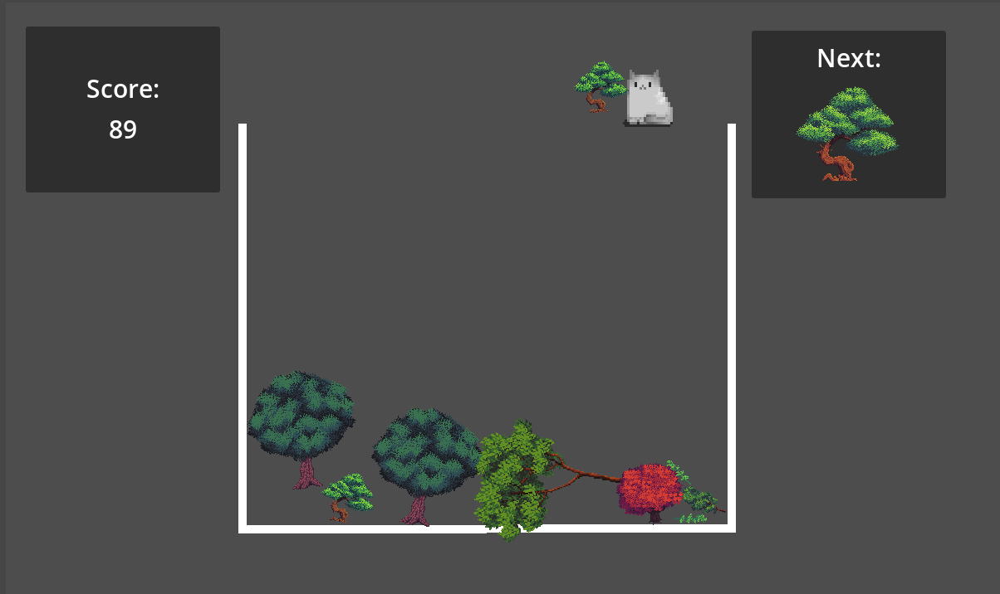
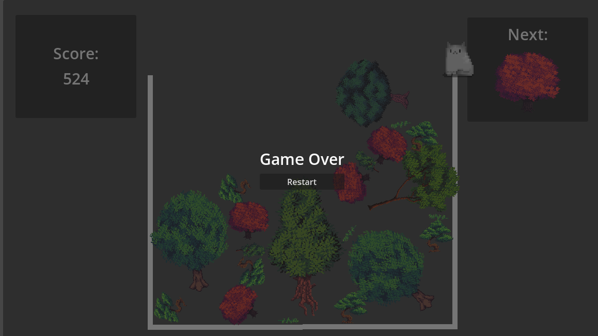

Treeika Game was created using Unity and C# for a game jam. It is a clone of the game Suika Game. The player matches the same trees together to make larger trees. The player’s score increases every time the trees merge.
Godot Game Jam
Treeika Game was created using Unity and C# for a game jam. It is a clone of the game Suika Game. The player matches the same trees together to make larger trees. The player’s score increases every time the trees merge.

The game shows the player the current tree they are going to drop next the the cat character they can move left and right. The right corner of the screen shows the next tree that the game randomly selected so the player is able to plan ahead. The score is shown the the left corner and larger trees that merge will give the player more points.

The player will see the game over screen when the tree they place reaches the top of the container. They are given the option to restart the game.
Trees: by SciGho https://ninjikin.itch.io/trees
Cat: by Maze.Bit.Boutique - https://mxmaze.itch.io/32-bit-cat-free
Music: by Potat0Master - (Beanfeast) - https://potat0master.itch.io/free-background-music-for-visual-novels-bgm-pack-1
Sound Effects: by Ellr - (Minimalist1, Minimalist8) - https://ellr.itch.io/universal-ui-soundpack